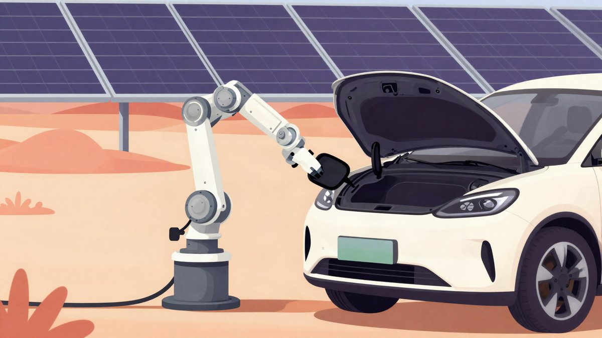

Sveučilište u Hong Kongu razvilo je oralni lijek s arsenom za leukemiju, preživljenje preko 97 posto

Medicinski fakultet Sveučilišta u Hong Kongu razvio je oralni lijek ARSENOL s arsenovim trioksidom za akutnu promijelocitnu leukemiju. Prema istraživanju koje navode kineski mediji, ukupno preživljenje pacijenata na toj terapiji iznosi preko 97 posto, a terapija bi mogla smanjiti upotrebu kemoterapije. Cijena i dolazak u Europu još nisu poznati.
Arsenov trioksid, tvar poznata i kao arsen, sve se više koristi kao lijek za leukemiju. Medicinski fakultet Sveučilišta u Hong Kongu razvio je oralni lijek ARSENOL® za liječenje akutne promijelocitne leukemije. Prema istraživanju koje navode kineski mediji, ukupno preživljenje pacijenata na toj terapiji iznosi više od 97 posto, pa bi terapija mogla dodatno smanjiti upotrebu klasične kemoterapije.
Akutna promijelocitna leukemija nekad je bila jedna od najsmrtonosnijih zločudnih bolesti krvi. Početkom 1980-ih smrtnost je prelazila 80 posto, a liječenje je bilo vrlo rizično.
Od vitamina A do arsena
Prijelomni trenutak dogodio se u Kini. Kineski istraživači su 1986. liječili petogodišnjeg pacijenta u završnoj fazi bolesti derivatom vitamina A, a nakon mjesec dana bolest je bila u potpunoj remisiji. Taj pacijent danas ima 45 godina i navodno je dobrog zdravlja.
Uz derivate vitamina A, važan lijek za ovu vrstu leukemije postao je i arsenov trioksid. U običnom govoru to je otrov arsen, no uz strogo kontrolirano doziranje ima farmakološko djelovanje.
ARSENOL®
Sveučilište u Hong Kongu je u veljači 2025. objavilo da je razvilo oralnu formulaciju arsenova trioksida pod nazivom ARSENOL®. To je prvi lijek na recept koji je u Hong Kongu samostalno izumljen i proizveden, a ujedno i prvi lijek iz Hong Konga s patentima u SAD-u, Europi i Japanu.
Lijek je odobrila uprava za lijekove pokrajine Guangdong, pa se smije klinički primjenjivati u gradovima kontinentalnog dijela područja Guangdong–Hong Kong–Makao.
Voditelj istraživanja je Harry Qiao, klinički izvanredni profesor na Odjelu za internu medicinu Medicinskog fakulteta Sveučilišta u Hong Kongu. Prema njegovim riječima, potpuno oralna terapija omogućuje liječenje pacijenata s različitim razinama rizika u specijalističkim ambulantama, a oralni arsen u terapiji može znatno smanjiti upotrebu kemoterapije.
Izvor: MyDrivers (快科技)
Povezani članci

BYD je u Emiratima pokazao robotsku ruku za punjenje snagom do 1000 kW9. studenoga 2026. Xpeng Aridge A868 izveo prijelaz u horizontalni let, domet mu je preko 500 km22. studenoga 2026.
Xpeng Aridge A868 izveo prijelaz u horizontalni let, domet mu je preko 500 km22. studenoga 2026.- Moždani implantat vratio govor pacijentima s ALS-om: razumljivost do 94 posto, jedna pacijentica ponovno pjeva15. studenoga 2026.